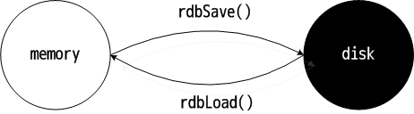

redis 支持两种方式进行 RDB 持久化：当前进程执行和后台执行（BGSAVE）。RDB BGSAVE 策略是 fork 出一个子进程，把内存中的数据集整个 dump 到硬盘上。两个场景举例：
- redis 服务器初始化过程中，设定了定时事件，每隔一段时间就会触发持久化操作；进入定时事件处理程序中，就会 fork 产生子进程执行持久化操作。
- redis 服务器预设了 save 指令，客户端可要求服务器进程中断服务，执行持久化操作。
这里主要展开的内容是 RDB 持久化操作的写文件过程，读过程和写过程相反。子进程的产生发生在 rdbSaveBackground() 中，真正的 RDB 持久化操作是在 rdbSave()，想要直接进行 RDB 持久化，调用 rdbSave() 即可。
以下主要以代码的方式来展开 RDB 的运作机制：
// 备份主程序
/* Save the DB on disk. Return REDIS_ERR on error, REDIS_OK on success */
int rdbSave(char *filename) {
dictIterator *di = NULL;
dictEntry *de;
char tmpfile[256];
char magic[10];
int j;
long long now = mstime();
FILE *fp;
rio rdb;
uint64_t cksum;
// 打开文件，准备写
snprintf(tmpfile,256,"temp-%d.rdb", (int) getpid());
fp = fopen(tmpfile,"w");
if (!fp) {
redisLog(REDIS_WARNING, "Failed opening .rdb for saving: %s",
strerror(errno));
return REDIS_ERR;
}
// 初始化 rdb 结构体。rdb 结构体内指定了读写文件的函数，已写/读字符统计等数据
rioInitWithFile(&rdb,fp);
if (server.rdb_checksum) // 校验和
rdb.update_cksum = rioGenericUpdateChecksum;
// 先写入版本号
snprintf(magic,sizeof(magic),"REDIS%04d",REDIS_RDB_VERSION);
if (rdbWriteRaw(&rdb,magic,9) == -1) goto werr;
for (j = 0; j < server.dbnum; j++) {
// server 中保存的数据
redisDb *db = server.db+j;
// 字典
dict *d = db->dict;
if (dictSize(d) == 0) continue;
// 字典迭代器
di = dictGetSafeIterator(d);
if (!di) {
fclose(fp);
return REDIS_ERR;
}
// 写入 RDB 操作码
/* Write the SELECT DB opcode */
if (rdbSaveType(&rdb,REDIS_RDB_OPCODE_SELECTDB) == -1) goto werr;
// 写入数据库序号
if (rdbSaveLen(&rdb,j) == -1) goto werr;
// 写入数据库中每一个数据项
/* Iterate this DB writing every entry */
while((de = dictNext(di)) != NULL) {
sds keystr = dictGetKey(de);
robj key,
*o = dictGetVal(de);
long long expire;
// 将 keystr 封装在 robj 里
initStaticStringObject(key,keystr);
// 获取过期时间
expire = getExpire(db,&key);
// 开始写入磁盘
if (rdbSaveKeyValuePair(&rdb,&key,o,expire,now) == -1) goto werr;
}
dictReleaseIterator(di);
}
di = NULL; /* So that we don't release it again on error. */
// RDB 结束码
/* EOF opcode */
if (rdbSaveType(&rdb,REDIS_RDB_OPCODE_EOF) == -1) goto werr;
// 校验和
/* CRC64 checksum. It will be zero if checksum computation is disabled, the
* loading code skips the check in this case. */
cksum = rdb.cksum;
memrev64ifbe(&cksum);
rioWrite(&rdb,&cksum,8);
// 同步到磁盘
/* Make sure data will not remain on the OS's output buffers */
fflush(fp);
fsync(fileno(fp));
fclose(fp);
// 修改临时文件名为指定文件名
/* Use RENAME to make sure the DB file is changed atomically only
* if the generate DB file is ok. */
if (rename(tmpfile,filename) == -1) {
redisLog(REDIS_WARNING,"Error moving temp DB file on the final"
"destination: %s", strerror(errno));
unlink(tmpfile);
return REDIS_ERR;
}
redisLog(REDIS_NOTICE,"DB saved on disk");
server.dirty = 0;
// 记录成功执行保存的时间
server.lastsave = time(NULL);
// 记录执行的结果状态为成功
server.lastbgsave_status = REDIS_OK;
return REDIS_OK;
werr:
// 清理工作，关闭文件描述符等
fclose(fp);
unlink(tmpfile);
redisLog(REDIS_WARNING,"Write error saving DB on disk: %s", strerror(errno));
if (di) dictReleaseIterator(di);
return REDIS_ERR;
}
// bgsaveCommand(),serverCron(),syncCommand(),updateSlavesWaitingBgsave() 会调用
// rdbSaveBackground()
int rdbSaveBackground(char *filename) {
pid_t childpid;
long long start;
// 已经有后台程序了，拒绝再次执行
if (server.rdb_child_pid != -1) return REDIS_ERR;
server.dirty_before_bgsave = server.dirty;
// 记录这次尝试执行持久化操作的时间
server.lastbgsave_try = time(NULL);
start = ustime();
if ((childpid = fork()) == 0) {
int retval;
// 取消监听
/* Child */
closeListeningSockets(0);
redisSetProcTitle("redis-rdb-bgsave");
// 执行备份主程序
retval = rdbSave(filename);
// 脏数据，其实就是子进程所消耗的内存大小
if (retval == REDIS_OK) {
// 获取脏数据大小
size_t private_dirty = zmalloc_get_private_dirty();
// 记录脏数据
if (private_dirty) {
redisLog(REDIS_NOTICE,
"RDB: %zu MB of memory used by copy-on-write",
private_dirty/(1024*1024));
}
}
// 退出子进程
exitFromChild((retval == REDIS_OK) ? 0 : 1);
} else {
/* Parent */
// 计算 fork 消耗的时间
server.stat_fork_time = ustime()-start;
// fork 出错
if (childpid == -1) {
// 记录执行的结果状态为失败
server.lastbgsave_status = REDIS_ERR;
redisLog(REDIS_WARNING,"Can't save in background: fork: %s",
strerror(errno));
return REDIS_ERR;
}
redisLog(REDIS_NOTICE,"Background saving started by pid %d",childpid);
// 记录保存的起始时间
server.rdb_save_time_start = time(NULL);
// 子进程 ID
server.rdb_child_pid = childpid;
updateDictResizePolicy();
return REDIS_OK;
}
return REDIS_OK; /* unreached */
}
如果采用 BGSAVE 策略，且内存中的数据集很大，fork() 会因为要为子进程产生一份虚拟空间表而花费较长的时间；如果此时客户端请求数量非常大的话，会导致较多的写时拷贝操作；在 RDB 持久化操作过程中，每一个数据都会导致 write() 系统调用，CPU 资源很紧张。因此，如果在一台物理机上部署多个 redis，应该避免同时持久化操作。
那如何知道 BGSAVE 占用了多少内存？子进程在结束之前，读取了自身私有脏数据 Private_Dirty 的大小，这样做是为了让用户看到 redis 的持久化进程所占用了有多少的空间。在父进程 fork 产生子进程过后，父子进程虽然有不同的虚拟空间，但物理空间上是共存的，直至父进程或者子进程修改内存数据为止，所以脏数据 Private_Dirty 可以近似的认为是子进程，即持久化进程占用的空间。